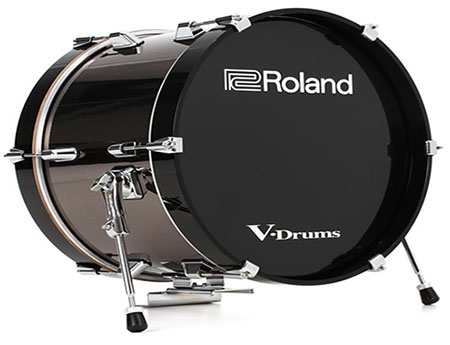

- Description
Bass drums are drums which are usuakky cylindrical and has a diameter much greater than its depth. Concert bass drums however are larger than normal basedrums and are mounted and stricked as the orchestra is playing. The CB-840C is a great choice for actual performances, and are typically used in professional and college level symphonies and orchestras. Covers and drop cloths are not included when renting this model.
- Specifications
Name: Yamaha CB-840C Depth: 22in Diameter: 40in Finish: Darkwood Hoop: Steel Lug Type: Small No of Lugs: 10 Tuning Bolts: 10x2 Shell Thickness: 9-ply Shell Material: Maple Pricing: RM300 per month - Pricing Explanation
Standing at USD1500, or RM6135, the concert bassdrum definitely is not cheap, but compared to other instruments, it is only used in performances and does not require much practice at all. Rental is advised to be during the month of the performance rather than anytime before.
- Disclaimer
When in possession of the instrument, the user holds full responsibility for what happens to the instrument. If the instrument rented is in anyway damaged, the customer will have to replace said instrument for the rental service. Late returners of the instrument would be issued a warning in a week, and will be subjegated to a RM150 late fee. For every subsequent week, another RM150 would be added.